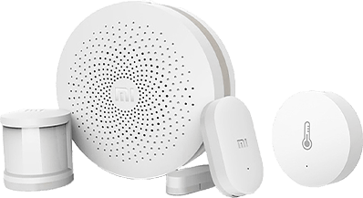
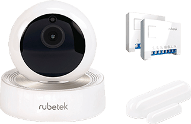
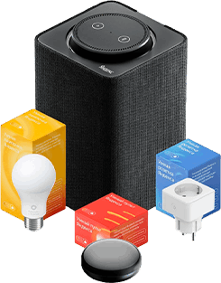

Как устроен умный дом?
В состав умного дома входят десятки различных компонентов, но все они делятся на три типа: контроллер, умная техника и сенсоры. Сердцем системы является основной блок, который ещё называют хабом, или шлюзом. К нему по кабелю или беспроводным протоколам связи подключаются датчики, кнопки, камеры и различные домашние гаджеты.
Шлюз соединяется с сервером, на котором хранятся все данные с устройств и выполняются сценарии. Серверы бывают локальными и облачными. Первые требуют установки на отдельный ПК, но работают без интернета. Вторые — избавляют от дополнительного звена в цепи, но зависимы от подключения к Сети. Кроме того, некоторые локальные решения поддерживают хабы нескольких типов, что позволяет объединить в единую инфраструктуру умные устройства разных производителей. После первичной настройки всё вышеописанное остаётся за кадром и взаимодействие с системой осуществляется через приложения на смартфоне или компьютере, которые связываются с сервером.
Как собрать систему "Умный дом"?
1.Выберите контроллер
На рынке доступны десятки различных систем умного дома, которые отличаются друг от друга ценой, экосистемой устройств и возможностями масштабирования. Выбирайте основываясь на этих параметрах.
Наибольшей популярностью пользуются решения с доступным ценником, обширной базой поддерживаемых девайсов и дружным сообществом. В России среди всех прочих выделяются следующие системы.
Xiaomi
У известного китайского бренда есть сразу несколько хабов в виде розеток, отдельных приборов, а также специальных версий с поддержкой определённых платформ, например Apple HomeKit.
Главные плюсы умного дома Xiaomi — самая большая экосистема устройств и лучшее соотношение цены и качества. Среди минусов — привязка к китайскому языку и сервисам.
Rubetek
Относительно доступная отечественная разработка с не очень обширным семейством умных устройств. Последнее отчасти компенсируется возможностью масштабирования за счёт компонентов, работающих по распространённому протоколу Z-Wave.
К преимуществам Rubetek можно отнести хоть и не официальную, но интеграцию с Apple HomeKit прямо из коробки, а также русскоязычную поддержку.
Яндекс
Умный дом версии российского интернет-гиганта не может похвастаться большим количеством фирменных устройств. Помимо колонки есть лишь лампочка, розетка и пульт. Зато решение «Яндекса» имеет поддержку датчиков и приборов сторонних производителей, среди которых Xiaomi, Rubetek, Samsung, Redmond и Philips.
Неоспоримым преимуществами системы является прекрасное голосовое управление на русском языке, а также возможность использования в качестве шлюза не только «Яндекс.Станции», но и любого гаджета с Алисой — например, смартфона с приложением «Яндекс». Правда, без интернета работать ничего не будет.
Raspberry Pi
Более сложный, но гибко настраиваемый и доступный вариант, предполагающий разворачивание на базе одноплатного компьютера Raspberry Pi платформы MajorDoMo или другого программного хаба.

За счёт установки плагинов и физических модулей расширения «Малинка» позволяет добавить поддержку почти любых протоколов связи и устройств. Однако придётся покопаться с командной строкой, поизучать документацию и, возможно, даже написать несколько строк кода.
2.Определитесь с набором датчиков
Чтобы сделать свой дом умнее, понадобятся розетки, лампы, различные датчики и другие приборы. Начинать лучше с малого — базовых компонентов, которые продаются вместе с хабом. Такие варианты поставки наиболее выгодны по цене и есть у большинства производителей.
Если понимание требований к умному дому сложилось ещё на этапе внедрения, можно сразу приобрести все необходимые сенсоры и устройства для автоматизации. Однако это вовсе не обязательно, поскольку любые платформы при надобности легко масштабировать в пределах своей экосистемы.
3.Установите и включите компоненты
Все современные системы работают по беспроводным каналам связи, поэтому их легко смонтировать без ущерба для ремонта и дизайна жилища.
Большинство элементов не требуют подключения к электросети и работают от литиевых батареек-таблеток, которых хватает примерно на год. Небольшие модули крепятся на двусторонний скотч, устройства покрупнее остаются в розетке или монтируются на стену шурупами.
Процедура предельно проста и занимает пару минут. Всё, что нужно делать, — это следовать инструкции. В некоторых случаях перед креплением компонентов требуется отсканировать QR-код на обратной стороне с помощью фирменного приложения.
4.Настройте систему
Как правило, все настройки осуществляются через мобильное приложение, которое загружается по QR-коду. Для добавления хаба и других компонентов следуйте подсказкам. Обычно нужно зажать кнопку на устройстве и выбрать его в приложении из списка.
После подключения выберите Wi-Fi-сеть и укажите расположение текущего устройства в доме.
5.Добавьте сценарии автоматизации
Просто включать и отключать розетки или лампы неинтересно. Чтобы система действительно оправдывала звание умной, необходимо настроить сценарии действий, которые будут запускаться при заданных условиях.
Для этого обычно есть специальная вкладка «Автоматизация» в приложении либо отдельный пункт в меню каждого устройства. Все сценарии работают по принципу простой логики: если (условие) → то (действие). Условий при этом может быть несколько. Например, когда в комнате темно и срабатывает датчик движения, включается ночник.